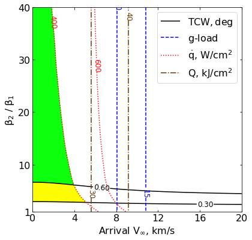
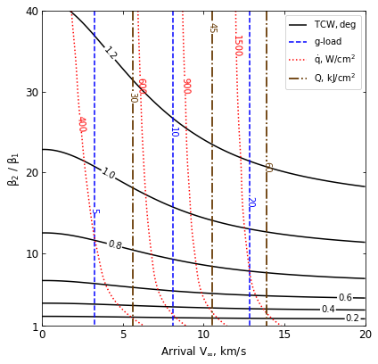

04 - b - Earth - Feasibility Charts - Drag¶
[1]:
from AMAT.planet import Planet
from AMAT.vehicle import Vehicle
import numpy as np
from scipy import interpolate
import matplotlib.pyplot as plt
from matplotlib import rcParams
from matplotlib.patches import Polygon
import os
[2]:
# Create a planet object
planet=Planet("EARTH")
planet.h_skip = 140000.0
# Load an nominal atmospheric profile with height, temp, pressure, density data
planet.loadAtmosphereModel('../atmdata/Earth/earth-gram-avg.dat', 0 , 1 ,2, 3)
vinf_kms_array = np.linspace( 0.0, 20.0, 11)
betaRatio_array = np.linspace( 1.0, 41.0 , 11)
[3]:
beta1 = 20.0
runID = 'earth-drag-'
[4]:
v0_kms_array = np.zeros(len(vinf_kms_array))
v0_kms_array[:] = np.sqrt(1.0*(vinf_kms_array[:]*1E3)**2.0 + 2*np.ones(len(vinf_kms_array))*planet.GM/(planet.RP+140.0*1.0E3))/1.0E3
overShootLimit_array = np.zeros((len(v0_kms_array),len(betaRatio_array)))
underShootLimit_array = np.zeros((len(v0_kms_array),len(betaRatio_array)))
exitflag_os_array = np.zeros((len(v0_kms_array),len(betaRatio_array)))
exitflag_us_array = np.zeros((len(v0_kms_array),len(betaRatio_array)))
TCW_array = np.zeros((len(v0_kms_array),len(betaRatio_array)))
[5]:
for i in range(0,len(v0_kms_array)):
for j in range(0,len(betaRatio_array)):
vehicle=Vehicle('DMVehicle', 150.0, beta1, 0.0, 3.1416, 0.0, 0.10, planet)
vehicle.setInitialState(140.0,0.0,0.0,v0_kms_array[i],0.0,-4.5,0.0,0.0)
vehicle.setSolverParams(1E-6)
vehicle.setDragModulationVehicleParams(beta1,betaRatio_array[j])
underShootLimit_array[i,j], exitflag_us_array[i,j] = vehicle.findUnderShootLimitD(2400.0, 2.0, -80.0,-4.0,1E-10,400.0)
overShootLimit_array[i,j] , exitflag_os_array[i,j] = vehicle.findOverShootLimitD (2400.0, 2.0, -80.0,-4.0,1E-10,400.0)
TCW_array[i,j] = overShootLimit_array[i,j] - underShootLimit_array[i,j]
print('VINF: '+str(vinf_kms_array[i])+' km/s, BETA RATIO: '+str(betaRatio_array[j])+' TCW: '+str(TCW_array[i,j])+' deg.')
np.savetxt('../data/jsr-paper/earth/'+runID+'vinf_kms_array.txt',vinf_kms_array)
np.savetxt('../data/jsr-paper/earth/'+runID+'v0_kms_array.txt',v0_kms_array)
np.savetxt('../data/jsr-paper/earth/'+runID+'betaRatio_array.txt',betaRatio_array)
np.savetxt('../data/jsr-paper/earth/'+runID+'overShootLimit_array.txt',overShootLimit_array)
np.savetxt('../data/jsr-paper/earth/'+runID+'exitflag_os_array.txt',exitflag_os_array)
np.savetxt('../data/jsr-paper/earth/'+runID+'underShootLimit_array.txt',underShootLimit_array)
np.savetxt('../data/jsr-paper/earth/'+runID+'exitflag_us_array.txt',exitflag_us_array)
np.savetxt('../data/jsr-paper/earth/'+runID+'TCW_array.txt',TCW_array)
VINF: 0.0 km/s, BETA RATIO: 1.0 TCW: 0.0 deg.
VINF: 0.0 km/s, BETA RATIO: 5.0 TCW: 0.5024158579508367 deg.
VINF: 0.0 km/s, BETA RATIO: 9.0 TCW: 0.6920214957062854 deg.
VINF: 0.0 km/s, BETA RATIO: 13.0 TCW: 0.812993623148941 deg.
VINF: 0.0 km/s, BETA RATIO: 17.0 TCW: 0.9017098706171964 deg.
VINF: 0.0 km/s, BETA RATIO: 21.0 TCW: 0.971948733622412 deg.
VINF: 0.0 km/s, BETA RATIO: 25.0 TCW: 1.030215350270737 deg.
VINF: 0.0 km/s, BETA RATIO: 29.0 TCW: 1.080004599833046 deg.
VINF: 0.0 km/s, BETA RATIO: 33.0 TCW: 1.1235908525741252 deg.
VINF: 0.0 km/s, BETA RATIO: 37.0 TCW: 1.1621811866898497 deg.
VINF: 0.0 km/s, BETA RATIO: 41.0 TCW: 1.1967777707832283 deg.
VINF: 2.0 km/s, BETA RATIO: 1.0 TCW: 0.0 deg.
VINF: 2.0 km/s, BETA RATIO: 5.0 TCW: 0.5084928039359511 deg.
VINF: 2.0 km/s, BETA RATIO: 9.0 TCW: 0.7009137212880887 deg.
VINF: 2.0 km/s, BETA RATIO: 13.0 TCW: 0.8234570946151507 deg.
VINF: 2.0 km/s, BETA RATIO: 17.0 TCW: 0.9133765700680669 deg.
VINF: 2.0 km/s, BETA RATIO: 21.0 TCW: 0.9846327129707788 deg.
VINF: 2.0 km/s, BETA RATIO: 25.0 TCW: 1.043606335799268 deg.
VINF: 2.0 km/s, BETA RATIO: 29.0 TCW: 1.094154423684813 deg.
VINF: 2.0 km/s, BETA RATIO: 33.0 TCW: 1.1382936643422 deg.
VINF: 2.0 km/s, BETA RATIO: 37.0 TCW: 1.1773440357974323 deg.
VINF: 2.0 km/s, BETA RATIO: 41.0 TCW: 1.2122794354363577 deg.
VINF: 4.0 km/s, BETA RATIO: 1.0 TCW: 0.0 deg.
VINF: 4.0 km/s, BETA RATIO: 5.0 TCW: 0.5256826096701843 deg.
VINF: 4.0 km/s, BETA RATIO: 9.0 TCW: 0.7254891864940873 deg.
VINF: 4.0 km/s, BETA RATIO: 13.0 TCW: 0.8520983545931813 deg.
VINF: 4.0 km/s, BETA RATIO: 17.0 TCW: 0.9449915318509738 deg.
VINF: 4.0 km/s, BETA RATIO: 21.0 TCW: 1.0186891513876617 deg.
VINF: 4.0 km/s, BETA RATIO: 25.0 TCW: 1.0797628225773224 deg.
VINF: 4.0 km/s, BETA RATIO: 29.0 TCW: 1.132038149276923 deg.
VINF: 4.0 km/s, BETA RATIO: 33.0 TCW: 1.1774446051640552 deg.
VINF: 4.0 km/s, BETA RATIO: 37.0 TCW: 1.2175659179629292 deg.
VINF: 4.0 km/s, BETA RATIO: 41.0 TCW: 1.253379664678505 deg.
VINF: 6.0 km/s, BETA RATIO: 1.0 TCW: 0.0 deg.
VINF: 6.0 km/s, BETA RATIO: 5.0 TCW: 0.5478086118637293 deg.
VINF: 6.0 km/s, BETA RATIO: 9.0 TCW: 0.7566204537251906 deg.
VINF: 6.0 km/s, BETA RATIO: 13.0 TCW: 0.8884976135632314 deg.
VINF: 6.0 km/s, BETA RATIO: 17.0 TCW: 0.9854981788230361 deg.
VINF: 6.0 km/s, BETA RATIO: 21.0 TCW: 1.0623931251902832 deg.
VINF: 6.0 km/s, BETA RATIO: 25.0 TCW: 1.126083068193111 deg.
VINF: 6.0 km/s, BETA RATIO: 29.0 TCW: 1.1801420656847768 deg.
VINF: 6.0 km/s, BETA RATIO: 33.0 TCW: 1.2269663571860292 deg.
VINF: 6.0 km/s, BETA RATIO: 37.0 TCW: 1.2684021467612183 deg.
VINF: 6.0 km/s, BETA RATIO: 41.0 TCW: 1.3056064268203045 deg.
VINF: 8.0 km/s, BETA RATIO: 1.0 TCW: 0.0 deg.
VINF: 8.0 km/s, BETA RATIO: 5.0 TCW: 0.571179966955242 deg.
VINF: 8.0 km/s, BETA RATIO: 9.0 TCW: 0.7886026306987333 deg.
VINF: 8.0 km/s, BETA RATIO: 13.0 TCW: 0.9259906900842907 deg.
VINF: 8.0 km/s, BETA RATIO: 17.0 TCW: 1.0270388619428559 deg.
VINF: 8.0 km/s, BETA RATIO: 21.0 TCW: 1.1070871752563107 deg.
VINF: 8.0 km/s, BETA RATIO: 25.0 TCW: 1.1728258233742963 deg.
VINF: 8.0 km/s, BETA RATIO: 29.0 TCW: 1.2285473830161209 deg.
VINF: 8.0 km/s, BETA RATIO: 33.0 TCW: 1.2770321856914961 deg.
VINF: 8.0 km/s, BETA RATIO: 37.0 TCW: 1.3199306304995844 deg.
VINF: 8.0 km/s, BETA RATIO: 41.0 TCW: 1.3580643990462704 deg.
VINF: 10.0 km/s, BETA RATIO: 1.0 TCW: 0.0 deg.
VINF: 10.0 km/s, BETA RATIO: 5.0 TCW: 0.5928134542664338 deg.
VINF: 10.0 km/s, BETA RATIO: 9.0 TCW: 0.8178167006626609 deg.
VINF: 10.0 km/s, BETA RATIO: 13.0 TCW: 0.9601281899558671 deg.
VINF: 10.0 km/s, BETA RATIO: 17.0 TCW: 1.0648214961620397 deg.
VINF: 10.0 km/s, BETA RATIO: 21.0 TCW: 1.1470388543239096 deg.
VINF: 10.0 km/s, BETA RATIO: 25.0 TCW: 1.2144698030533618 deg.
VINF: 10.0 km/s, BETA RATIO: 29.0 TCW: 1.2719298508418433 deg.
VINF: 10.0 km/s, BETA RATIO: 33.0 TCW: 1.3216473308275454 deg.
VINF: 10.0 km/s, BETA RATIO: 37.0 TCW: 1.3650112365321547 deg.
VINF: 10.0 km/s, BETA RATIO: 41.0 TCW: 1.4035480905768054 deg.
VINF: 12.0 km/s, BETA RATIO: 1.0 TCW: 0.0 deg.
VINF: 12.0 km/s, BETA RATIO: 5.0 TCW: 0.6111976380707347 deg.
VINF: 12.0 km/s, BETA RATIO: 9.0 TCW: 0.8426389456617471 deg.
VINF: 12.0 km/s, BETA RATIO: 13.0 TCW: 0.9891743666012189 deg.
VINF: 12.0 km/s, BETA RATIO: 17.0 TCW: 1.0963743904831063 deg.
VINF: 12.0 km/s, BETA RATIO: 21.0 TCW: 1.1801824799076712 deg.
VINF: 12.0 km/s, BETA RATIO: 25.0 TCW: 1.2493653600358812 deg.
VINF: 12.0 km/s, BETA RATIO: 29.0 TCW: 1.3077243775369425 deg.
VINF: 12.0 km/s, BETA RATIO: 33.0 TCW: 1.3576669723952364 deg.
VINF: 12.0 km/s, BETA RATIO: 37.0 TCW: 1.4014748134941328 deg.
VINF: 12.0 km/s, BETA RATIO: 41.0 TCW: 1.440504557267559 deg.
VINF: 14.0 km/s, BETA RATIO: 1.0 TCW: 0.0 deg.
VINF: 14.0 km/s, BETA RATIO: 5.0 TCW: 0.6263489441480488 deg.
VINF: 14.0 km/s, BETA RATIO: 9.0 TCW: 0.863073983018694 deg.
VINF: 14.0 km/s, BETA RATIO: 13.0 TCW: 1.0129138316624449 deg.
VINF: 14.0 km/s, BETA RATIO: 17.0 TCW: 1.121699113966315 deg.
VINF: 14.0 km/s, BETA RATIO: 21.0 TCW: 1.2071531415895151 deg.
VINF: 14.0 km/s, BETA RATIO: 25.0 TCW: 1.277171142912266 deg.
VINF: 14.0 km/s, BETA RATIO: 29.0 TCW: 1.3356359909703315 deg.
VINF: 14.0 km/s, BETA RATIO: 33.0 TCW: 1.3859382518348866 deg.
VINF: 14.0 km/s, BETA RATIO: 37.0 TCW: 1.4302129275529296 deg.
VINF: 14.0 km/s, BETA RATIO: 41.0 TCW: 1.4695520619461604 deg.
VINF: 16.0 km/s, BETA RATIO: 1.0 TCW: 0.0 deg.
VINF: 16.0 km/s, BETA RATIO: 5.0 TCW: 0.6386032163682103 deg.
VINF: 16.0 km/s, BETA RATIO: 9.0 TCW: 0.879705040519184 deg.
VINF: 16.0 km/s, BETA RATIO: 13.0 TCW: 1.031826681290113 deg.
VINF: 16.0 km/s, BETA RATIO: 17.0 TCW: 1.141910403399379 deg.
VINF: 16.0 km/s, BETA RATIO: 21.0 TCW: 1.2284846077491238 deg.
VINF: 16.0 km/s, BETA RATIO: 25.0 TCW: 1.298522606088227 deg.
VINF: 16.0 km/s, BETA RATIO: 29.0 TCW: 1.3572335174940235 deg.
VINF: 16.0 km/s, BETA RATIO: 33.0 TCW: 1.4078978686666233 deg.
VINF: 16.0 km/s, BETA RATIO: 37.0 TCW: 1.4523462156466849 deg.
VINF: 16.0 km/s, BETA RATIO: 41.0 TCW: 1.4917564620627672 deg.
VINF: 18.0 km/s, BETA RATIO: 1.0 TCW: 0.0 deg.
VINF: 18.0 km/s, BETA RATIO: 5.0 TCW: 0.6485547510274046 deg.
VINF: 18.0 km/s, BETA RATIO: 9.0 TCW: 0.8931842920464987 deg.
VINF: 18.0 km/s, BETA RATIO: 13.0 TCW: 1.046759833869146 deg.
VINF: 18.0 km/s, BETA RATIO: 17.0 TCW: 1.158121125485195 deg.
VINF: 18.0 km/s, BETA RATIO: 21.0 TCW: 1.2449064757165615 deg.
VINF: 18.0 km/s, BETA RATIO: 25.0 TCW: 1.3149266510517919 deg.
VINF: 18.0 km/s, BETA RATIO: 29.0 TCW: 1.3739674147291225 deg.
VINF: 18.0 km/s, BETA RATIO: 33.0 TCW: 1.4247854124987498 deg.
VINF: 18.0 km/s, BETA RATIO: 37.0 TCW: 1.4692256475063914 deg.
VINF: 18.0 km/s, BETA RATIO: 41.0 TCW: 1.5085103209930821 deg.
VINF: 20.0 km/s, BETA RATIO: 1.0 TCW: 0.0 deg.
VINF: 20.0 km/s, BETA RATIO: 5.0 TCW: 0.6568261779175373 deg.
VINF: 20.0 km/s, BETA RATIO: 9.0 TCW: 0.9042180979777186 deg.
VINF: 20.0 km/s, BETA RATIO: 13.0 TCW: 1.0587889082016773 deg.
VINF: 20.0 km/s, BETA RATIO: 17.0 TCW: 1.1710584895408829 deg.
VINF: 20.0 km/s, BETA RATIO: 21.0 TCW: 1.2576599730055023 deg.
VINF: 20.0 km/s, BETA RATIO: 25.0 TCW: 1.3278858745361504 deg.
VINF: 20.0 km/s, BETA RATIO: 29.0 TCW: 1.387020216898236 deg.
VINF: 20.0 km/s, BETA RATIO: 33.0 TCW: 1.4378129194119538 deg.
VINF: 20.0 km/s, BETA RATIO: 37.0 TCW: 1.4820925628991972 deg.
VINF: 20.0 km/s, BETA RATIO: 41.0 TCW: 1.521178109505854 deg.
[ ]:
acc_net_g_max_array = np.zeros((len(v0_kms_array),len(betaRatio_array)))
stag_pres_atm_max_array = np.zeros((len(v0_kms_array),len(betaRatio_array)))
q_stag_total_max_array = np.zeros((len(v0_kms_array),len(betaRatio_array)))
heatload_max_array = np.zeros((len(v0_kms_array),len(betaRatio_array)))
for i in range(0,len(v0_kms_array)):
for j in range(0,len(betaRatio_array)):
vehicle=Vehicle('DMVehicle', 150.0, beta1, 0.0, 3.1416, 0.0, 0.10, planet)
vehicle.setInitialState(140.0,0.0,0.0,v0_kms_array[i],0.0,overShootLimit_array[i,j],0.0,0.0)
vehicle.setSolverParams(1E-6)
vehicle.propogateEntry (2400.0, 2.0, 0.0)
# Extract and save variables to plot
t_min_os = vehicle.t_minc
h_km_os = vehicle.h_kmc
acc_net_g_os = vehicle.acc_net_g
q_stag_con_os = vehicle.q_stag_con
q_stag_rad_os = vehicle.q_stag_rad
rc_os = vehicle.rc
vc_os = vehicle.vc
stag_pres_atm_os = vehicle.computeStagPres(rc_os,vc_os)/(1.01325E5)
heatload_os = vehicle.heatload
vehicle=Vehicle('DMVehicle', 150.0, beta1, 0.0, 3.1416, 0.0, 0.10, planet)
vehicle.setInitialState(140.0,0.0,0.0,v0_kms_array[i],0.0,underShootLimit_array[i,j],0.0,0.0)
vehicle.setSolverParams( 1E-6)
vehicle.propogateEntry (2400.0, 2.0, 0.0)
# Extract and save variable to plot
t_min_us = vehicle.t_minc
h_km_us = vehicle.h_kmc
acc_net_g_us = vehicle.acc_net_g
q_stag_con_us = vehicle.q_stag_con
q_stag_rad_us = vehicle.q_stag_rad
rc_us = vehicle.rc
vc_us = vehicle.vc
stag_pres_atm_us = vehicle.computeStagPres(rc_us,vc_us)/(1.01325E5)
heatload_us = vehicle.heatload
q_stag_total_os = q_stag_con_os + q_stag_rad_os
q_stag_total_us = q_stag_con_us + q_stag_rad_us
acc_net_g_max_array[i,j] = max(max(acc_net_g_os),max(acc_net_g_os))
stag_pres_atm_max_array[i,j] = max(max(stag_pres_atm_os),max(stag_pres_atm_os))
q_stag_total_max_array[i,j] = max(max(q_stag_total_os),max(q_stag_total_us))
heatload_max_array[i,j] = max(max(heatload_os),max(heatload_os))
print("V_infty: "+str(vinf_kms_array[i])+" km/s"+", BR: "+str(betaRatio_array[j])+" G_MAX: "+str(acc_net_g_max_array[i,j])+" QDOT_MAX: "+str(q_stag_total_max_array[i,j])+" J_MAX: "+str(heatload_max_array[i,j])+" STAG. PRES: "+str(stag_pres_atm_max_array[i,j]))
np.savetxt('../data/jsr-paper/earth/'+runID+'acc_net_g_max_array.txt',acc_net_g_max_array)
np.savetxt('../data/jsr-paper/earth/'+runID+'stag_pres_atm_max_array.txt',stag_pres_atm_max_array)
np.savetxt('../data/jsr-paper/earth/'+runID+'q_stag_total_max_array.txt',q_stag_total_max_array)
np.savetxt('../data/jsr-paper/earth/'+runID+'heatload_max_array.txt',heatload_max_array)
[8]:
acc_net_g_max_array = np.zeros((len(v0_kms_array),len(betaRatio_array)))
stag_pres_atm_max_array = np.zeros((len(v0_kms_array),len(betaRatio_array)))
q_stag_total_max_array = np.zeros((len(v0_kms_array),len(betaRatio_array)))
heatload_max_array = np.zeros((len(v0_kms_array),len(betaRatio_array)))
for i in range(0,len(v0_kms_array)):
for j in range(0,len(betaRatio_array)):
vehicle=Vehicle('DMVehicle', 150.0, beta1, 0.0, 3.1416, 0.0, 0.10, planet)
vehicle.setInitialState(140.0,0.0,0.0,v0_kms_array[i],0.0,overShootLimit_array[i,j],0.0,0.0)
vehicle.setSolverParams(1E-6)
vehicle.propogateEntry (2400.0, 2.0, 0.0)
# Extract and save variables to plot
t_min_os = vehicle.t_minc
h_km_os = vehicle.h_kmc
acc_net_g_os = vehicle.acc_net_g
q_stag_con_os = vehicle.q_stag_con
q_stag_rad_os = vehicle.q_stag_rad
rc_os = vehicle.rc
vc_os = vehicle.vc
stag_pres_atm_os = vehicle.computeStagPres(rc_os,vc_os)/(1.01325E5)
heatload_os = vehicle.heatload
vehicle=Vehicle('DMVehicle', 150.0, beta1, 0.0, 3.1416, 0.0, 0.10, planet)
vehicle.setInitialState(140.0,0.0,0.0,v0_kms_array[i],0.0,underShootLimit_array[i,j],0.0,0.0)
vehicle.setSolverParams( 1E-6)
vehicle.propogateEntry (2400.0, 2.0, 0.0)
# Extract and save variable to plot
t_min_us = vehicle.t_minc
h_km_us = vehicle.h_kmc
acc_net_g_us = vehicle.acc_net_g
q_stag_con_us = vehicle.q_stag_con
q_stag_rad_us = vehicle.q_stag_rad
rc_us = vehicle.rc
vc_us = vehicle.vc
stag_pres_atm_us = vehicle.computeStagPres(rc_us,vc_us)/(1.01325E5)
heatload_us = vehicle.heatload
q_stag_total_os = q_stag_con_os + q_stag_rad_os
q_stag_total_us = q_stag_con_us + q_stag_rad_us
acc_net_g_max_array[i,j] = max(max(acc_net_g_os),max(acc_net_g_os))
stag_pres_atm_max_array[i,j] = max(max(stag_pres_atm_os),max(stag_pres_atm_os))
q_stag_total_max_array[i,j] = max(max(q_stag_total_os),max(q_stag_total_us))
heatload_max_array[i,j] = max(max(heatload_os),max(heatload_os))
print("V_infty: "+str(vinf_kms_array[i])+" km/s"+", BR: "+str(betaRatio_array[j])+" G_MAX: "+str(acc_net_g_max_array[i,j])+" QDOT_MAX: "+str(q_stag_total_max_array[i,j])+" J_MAX: "+str(heatload_max_array[i,j])+" STAG. PRES: "+str(stag_pres_atm_max_array[i,j]))
np.savetxt('../data/jsr-paper/earth/'+runID+'acc_net_g_max_array.txt',acc_net_g_max_array)
np.savetxt('../data/jsr-paper/earth/'+runID+'stag_pres_atm_max_array.txt',stag_pres_atm_max_array)
np.savetxt('../data/jsr-paper/earth/'+runID+'q_stag_total_max_array.txt',q_stag_total_max_array)
np.savetxt('../data/jsr-paper/earth/'+runID+'heatload_max_array.txt',heatload_max_array)
V_infty: 0.0 km/s, BR: 1.0 G_MAX: 4.1238715408974125 QDOT_MAX: 228.76520634563138 J_MAX: 23556.850516412036 STAG. PRES: 0.00799217389229539
V_infty: 0.0 km/s, BR: 5.0 G_MAX: 4.1238715408974125 QDOT_MAX: 310.13215828749435 J_MAX: 23556.850516412036 STAG. PRES: 0.00799217389229539
V_infty: 0.0 km/s, BR: 9.0 G_MAX: 4.1238715408974125 QDOT_MAX: 332.95054702339985 J_MAX: 23556.850516412036 STAG. PRES: 0.00799217389229539
V_infty: 0.0 km/s, BR: 13.0 G_MAX: 4.1238715408974125 QDOT_MAX: 346.06097940973405 J_MAX: 23556.850516412036 STAG. PRES: 0.00799217389229539
V_infty: 0.0 km/s, BR: 17.0 G_MAX: 4.1238715408974125 QDOT_MAX: 354.619848457484 J_MAX: 23556.850516412036 STAG. PRES: 0.00799217389229539
V_infty: 0.0 km/s, BR: 21.0 G_MAX: 4.1238715408974125 QDOT_MAX: 361.7390451897104 J_MAX: 23556.850516412036 STAG. PRES: 0.00799217389229539
V_infty: 0.0 km/s, BR: 25.0 G_MAX: 4.1238715408974125 QDOT_MAX: 366.8353594528586 J_MAX: 23556.850516412036 STAG. PRES: 0.00799217389229539
V_infty: 0.0 km/s, BR: 29.0 G_MAX: 4.1238715408974125 QDOT_MAX: 371.5261723901511 J_MAX: 23556.850516412036 STAG. PRES: 0.00799217389229539
V_infty: 0.0 km/s, BR: 33.0 G_MAX: 4.1238715408974125 QDOT_MAX: 374.7576374866057 J_MAX: 23556.850516412036 STAG. PRES: 0.00799217389229539
V_infty: 0.0 km/s, BR: 37.0 G_MAX: 4.1238715408974125 QDOT_MAX: 378.36458290571716 J_MAX: 23556.850516412036 STAG. PRES: 0.00799217389229539
V_infty: 0.0 km/s, BR: 41.0 G_MAX: 4.1238715408974125 QDOT_MAX: 381.45591442030525 J_MAX: 23556.850516412036 STAG. PRES: 0.00799217389229539
V_infty: 2.0 km/s, BR: 1.0 G_MAX: 4.456212750229545 QDOT_MAX: 244.31631024231763 J_MAX: 24412.720934276764 STAG. PRES: 0.008635934270157066
V_infty: 2.0 km/s, BR: 5.0 G_MAX: 4.456212750229545 QDOT_MAX: 329.2561263615547 J_MAX: 24412.720934276764 STAG. PRES: 0.008635934270157066
V_infty: 2.0 km/s, BR: 9.0 G_MAX: 4.456212750229545 QDOT_MAX: 353.186327600604 J_MAX: 24412.720934276764 STAG. PRES: 0.008635934270157066
V_infty: 2.0 km/s, BR: 13.0 G_MAX: 4.456212750229545 QDOT_MAX: 367.015538951275 J_MAX: 24412.720934276764 STAG. PRES: 0.008635934270157066
V_infty: 2.0 km/s, BR: 17.0 G_MAX: 4.456212750229545 QDOT_MAX: 376.0440882335085 J_MAX: 24412.720934276764 STAG. PRES: 0.008635934270157066
V_infty: 2.0 km/s, BR: 21.0 G_MAX: 4.456212750229545 QDOT_MAX: 383.170708803897 J_MAX: 24412.720934276764 STAG. PRES: 0.008635934270157066
V_infty: 2.0 km/s, BR: 25.0 G_MAX: 4.456212750229545 QDOT_MAX: 388.75200526041056 J_MAX: 24412.720934276764 STAG. PRES: 0.008635934270157066
V_infty: 2.0 km/s, BR: 29.0 G_MAX: 4.456212750229545 QDOT_MAX: 393.52286758609347 J_MAX: 24412.720934276764 STAG. PRES: 0.008635934270157066
V_infty: 2.0 km/s, BR: 33.0 G_MAX: 4.456212750229545 QDOT_MAX: 396.80039374843517 J_MAX: 24412.720934276764 STAG. PRES: 0.008635934270157066
V_infty: 2.0 km/s, BR: 37.0 G_MAX: 4.456212750229545 QDOT_MAX: 400.78501223092553 J_MAX: 24412.720934276764 STAG. PRES: 0.008635934270157066
V_infty: 2.0 km/s, BR: 41.0 G_MAX: 4.456212750229545 QDOT_MAX: 403.9988233951479 J_MAX: 24412.720934276764 STAG. PRES: 0.008635934270157066
V_infty: 4.0 km/s, BR: 1.0 G_MAX: 5.467418823009016 QDOT_MAX: 292.96791813323136 J_MAX: 26891.06243229321 STAG. PRES: 0.010595011946048278
V_infty: 4.0 km/s, BR: 5.0 G_MAX: 5.467418823009016 QDOT_MAX: 390.2883506042765 J_MAX: 26891.06243229321 STAG. PRES: 0.010595011946048278
V_infty: 4.0 km/s, BR: 9.0 G_MAX: 5.467418823009016 QDOT_MAX: 417.78444518187825 J_MAX: 26891.06243229321 STAG. PRES: 0.010595011946048278
V_infty: 4.0 km/s, BR: 13.0 G_MAX: 5.467418823009016 QDOT_MAX: 433.40323241342196 J_MAX: 26891.06243229321 STAG. PRES: 0.010595011946048278
V_infty: 4.0 km/s, BR: 17.0 G_MAX: 5.467418823009016 QDOT_MAX: 443.53344318667746 J_MAX: 26891.06243229321 STAG. PRES: 0.010595011946048278
V_infty: 4.0 km/s, BR: 21.0 G_MAX: 5.467418823009016 QDOT_MAX: 451.9501628838298 J_MAX: 26891.06243229321 STAG. PRES: 0.010595011946048278
V_infty: 4.0 km/s, BR: 25.0 G_MAX: 5.467418823009016 QDOT_MAX: 457.8896949316622 J_MAX: 26891.06243229321 STAG. PRES: 0.010595011946048278
V_infty: 4.0 km/s, BR: 29.0 G_MAX: 5.467418823009016 QDOT_MAX: 463.8928315029548 J_MAX: 26891.06243229321 STAG. PRES: 0.010595011946048278
V_infty: 4.0 km/s, BR: 33.0 G_MAX: 5.467418823009016 QDOT_MAX: 468.0348996243907 J_MAX: 26891.06243229321 STAG. PRES: 0.010595011946048278
V_infty: 4.0 km/s, BR: 37.0 G_MAX: 5.467418823009016 QDOT_MAX: 471.3003611069189 J_MAX: 26891.06243229321 STAG. PRES: 0.010595011946048278
V_infty: 4.0 km/s, BR: 41.0 G_MAX: 5.467418823009016 QDOT_MAX: 475.5749082498807 J_MAX: 26891.06243229321 STAG. PRES: 0.010595011946048278
V_infty: 6.0 km/s, BR: 1.0 G_MAX: 7.238483146906695 QDOT_MAX: 380.55008895389506 J_MAX: 30881.64242640348 STAG. PRES: 0.014025522929466733
V_infty: 6.0 km/s, BR: 5.0 G_MAX: 7.238483146906695 QDOT_MAX: 499.3274091563311 J_MAX: 30881.64242640348 STAG. PRES: 0.014025522929466733
V_infty: 6.0 km/s, BR: 9.0 G_MAX: 7.238483146906695 QDOT_MAX: 532.5095236508031 J_MAX: 30881.64242640348 STAG. PRES: 0.014025522929466733
V_infty: 6.0 km/s, BR: 13.0 G_MAX: 7.238483146906695 QDOT_MAX: 551.2267295371105 J_MAX: 30881.64242640348 STAG. PRES: 0.014025522929466733
V_infty: 6.0 km/s, BR: 17.0 G_MAX: 7.238483146906695 QDOT_MAX: 564.9741339212634 J_MAX: 30881.64242640348 STAG. PRES: 0.014025522929466733
V_infty: 6.0 km/s, BR: 21.0 G_MAX: 7.238483146906695 QDOT_MAX: 574.7655091974722 J_MAX: 30881.64242640348 STAG. PRES: 0.014025522929466733
V_infty: 6.0 km/s, BR: 25.0 G_MAX: 7.238483146906695 QDOT_MAX: 583.3056447545197 J_MAX: 30881.64242640348 STAG. PRES: 0.014025522929466733
V_infty: 6.0 km/s, BR: 29.0 G_MAX: 7.238483146906695 QDOT_MAX: 589.3534934704757 J_MAX: 30881.64242640348 STAG. PRES: 0.014025522929466733
V_infty: 6.0 km/s, BR: 33.0 G_MAX: 7.238483146906695 QDOT_MAX: 594.6522647431033 J_MAX: 30881.64242640348 STAG. PRES: 0.014025522929466733
V_infty: 6.0 km/s, BR: 37.0 G_MAX: 7.238483146906695 QDOT_MAX: 600.4216187211982 J_MAX: 30881.64242640348 STAG. PRES: 0.014025522929466733
V_infty: 6.0 km/s, BR: 41.0 G_MAX: 7.238483146906695 QDOT_MAX: 604.8081843081897 J_MAX: 30881.64242640348 STAG. PRES: 0.014025522929466733
V_infty: 8.0 km/s, BR: 1.0 G_MAX: 9.833761340424903 QDOT_MAX: 516.3044657298116 J_MAX: 36268.49196774403 STAG. PRES: 0.019051866516568348
V_infty: 8.0 km/s, BR: 5.0 G_MAX: 9.833761340424903 QDOT_MAX: 669.0317097053579 J_MAX: 36268.49196774403 STAG. PRES: 0.019051866516568348
V_infty: 8.0 km/s, BR: 9.0 G_MAX: 9.833761340424903 QDOT_MAX: 712.3122969665475 J_MAX: 36268.49196774403 STAG. PRES: 0.019051866516568348
V_infty: 8.0 km/s, BR: 13.0 G_MAX: 9.833761340424903 QDOT_MAX: 737.7989874242227 J_MAX: 36268.49196774403 STAG. PRES: 0.019051866516568348
V_infty: 8.0 km/s, BR: 17.0 G_MAX: 9.833761340424903 QDOT_MAX: 753.7281349987688 J_MAX: 36268.49196774403 STAG. PRES: 0.019051866516568348
V_infty: 8.0 km/s, BR: 21.0 G_MAX: 9.833761340424903 QDOT_MAX: 768.5585368080998 J_MAX: 36268.49196774403 STAG. PRES: 0.019051866516568348
V_infty: 8.0 km/s, BR: 25.0 G_MAX: 9.833761340424903 QDOT_MAX: 778.3641284108481 J_MAX: 36268.49196774403 STAG. PRES: 0.019051866516568348
V_infty: 8.0 km/s, BR: 29.0 G_MAX: 9.833761340424903 QDOT_MAX: 785.8216114549768 J_MAX: 36268.49196774403 STAG. PRES: 0.019051866516568348
V_infty: 8.0 km/s, BR: 33.0 G_MAX: 9.833761340424903 QDOT_MAX: 794.6301763648714 J_MAX: 36268.49196774403 STAG. PRES: 0.019051866516568348
V_infty: 8.0 km/s, BR: 37.0 G_MAX: 9.833761340424903 QDOT_MAX: 802.0082416143698 J_MAX: 36268.49196774403 STAG. PRES: 0.019051866516568348
V_infty: 8.0 km/s, BR: 41.0 G_MAX: 9.833761340424903 QDOT_MAX: 807.6372504392759 J_MAX: 36268.49196774403 STAG. PRES: 0.019051866516568348
V_infty: 10.0 km/s, BR: 1.0 G_MAX: 13.326852936034982 QDOT_MAX: 711.8232789580408 J_MAX: 43005.73076907522 STAG. PRES: 0.025816654612041624
V_infty: 10.0 km/s, BR: 5.0 G_MAX: 13.326852936034982 QDOT_MAX: 913.523058369278 J_MAX: 43005.73076907522 STAG. PRES: 0.025816654612041624
V_infty: 10.0 km/s, BR: 9.0 G_MAX: 13.326852936034982 QDOT_MAX: 969.9076982809572 J_MAX: 43005.73076907522 STAG. PRES: 0.025816654612041624
V_infty: 10.0 km/s, BR: 13.0 G_MAX: 13.326852936034982 QDOT_MAX: 1006.5248839520195 J_MAX: 43005.73076907522 STAG. PRES: 0.025816654612041624
V_infty: 10.0 km/s, BR: 17.0 G_MAX: 13.326852936034982 QDOT_MAX: 1028.096389570821 J_MAX: 43005.73076907522 STAG. PRES: 0.025816654612041624
V_infty: 10.0 km/s, BR: 21.0 G_MAX: 13.326852936034982 QDOT_MAX: 1048.552723222141 J_MAX: 43005.73076907522 STAG. PRES: 0.025816654612041624
V_infty: 10.0 km/s, BR: 25.0 G_MAX: 13.326852936034982 QDOT_MAX: 1062.1911660315056 J_MAX: 43005.73076907522 STAG. PRES: 0.025816654612041624
V_infty: 10.0 km/s, BR: 29.0 G_MAX: 13.326852936034982 QDOT_MAX: 1070.4174948845573 J_MAX: 43005.73076907522 STAG. PRES: 0.025816654612041624
V_infty: 10.0 km/s, BR: 33.0 G_MAX: 13.326852936034982 QDOT_MAX: 1082.2339899260355 J_MAX: 43005.73076907522 STAG. PRES: 0.025816654612041624
V_infty: 10.0 km/s, BR: 37.0 G_MAX: 13.326852936034982 QDOT_MAX: 1093.0021567150889 J_MAX: 43005.73076907522 STAG. PRES: 0.025816654612041624
V_infty: 10.0 km/s, BR: 41.0 G_MAX: 13.326852936034982 QDOT_MAX: 1101.3367432917912 J_MAX: 43005.73076907522 STAG. PRES: 0.025816654612041624
V_infty: 12.0 km/s, BR: 1.0 G_MAX: 17.768325412866375 QDOT_MAX: 982.2457002731644 J_MAX: 51078.41466149958 STAG. PRES: 0.03441668939295336
V_infty: 12.0 km/s, BR: 5.0 G_MAX: 17.768325412866375 QDOT_MAX: 1252.8508901367202 J_MAX: 51078.41466149958 STAG. PRES: 0.03441668939295336
V_infty: 12.0 km/s, BR: 9.0 G_MAX: 17.768325412866375 QDOT_MAX: 1331.984284650074 J_MAX: 51078.41466149958 STAG. PRES: 0.03441668939295336
V_infty: 12.0 km/s, BR: 13.0 G_MAX: 17.768325412866375 QDOT_MAX: 1376.9824347625915 J_MAX: 51078.41466149958 STAG. PRES: 0.03441668939295336
V_infty: 12.0 km/s, BR: 17.0 G_MAX: 17.768325412866375 QDOT_MAX: 1410.827869189508 J_MAX: 51078.41466149958 STAG. PRES: 0.03441668939295336
V_infty: 12.0 km/s, BR: 21.0 G_MAX: 17.768325412866375 QDOT_MAX: 1428.300094790352 J_MAX: 51078.41466149958 STAG. PRES: 0.03441668939295336
V_infty: 12.0 km/s, BR: 25.0 G_MAX: 17.768325412866375 QDOT_MAX: 1451.4831040715926 J_MAX: 51078.41466149958 STAG. PRES: 0.03441668939295336
V_infty: 12.0 km/s, BR: 29.0 G_MAX: 17.768325412866375 QDOT_MAX: 1471.6856834822872 J_MAX: 51078.41466149958 STAG. PRES: 0.03441668939295336
V_infty: 12.0 km/s, BR: 33.0 G_MAX: 17.768325412866375 QDOT_MAX: 1485.6588430505526 J_MAX: 51078.41466149958 STAG. PRES: 0.03441668939295336
V_infty: 12.0 km/s, BR: 37.0 G_MAX: 17.768325412866375 QDOT_MAX: 1495.1904544904191 J_MAX: 51078.41466149958 STAG. PRES: 0.03441668939295336
V_infty: 12.0 km/s, BR: 41.0 G_MAX: 17.768325412866375 QDOT_MAX: 1501.9762188821849 J_MAX: 51078.41466149958 STAG. PRES: 0.03441668939295336
V_infty: 14.0 km/s, BR: 1.0 G_MAX: 23.210798390249305 QDOT_MAX: 1332.6648097501122 J_MAX: 60331.612522290234 STAG. PRES: 0.04495470923827458
V_infty: 14.0 km/s, BR: 5.0 G_MAX: 23.210798390249305 QDOT_MAX: 1689.5404599542887 J_MAX: 60331.612522290234 STAG. PRES: 0.04495470923827458
V_infty: 14.0 km/s, BR: 9.0 G_MAX: 23.210798390249305 QDOT_MAX: 1799.4447912147089 J_MAX: 60331.612522290234 STAG. PRES: 0.04495470923827458
V_infty: 14.0 km/s, BR: 13.0 G_MAX: 23.210798390249305 QDOT_MAX: 1865.8713942380969 J_MAX: 60331.612522290234 STAG. PRES: 0.04495470923827458
V_infty: 14.0 km/s, BR: 17.0 G_MAX: 23.210798390249305 QDOT_MAX: 1908.9967369534634 J_MAX: 60331.612522290234 STAG. PRES: 0.04495470923827458
V_infty: 14.0 km/s, BR: 21.0 G_MAX: 23.210798390249305 QDOT_MAX: 1927.2314937665715 J_MAX: 60331.612522290234 STAG. PRES: 0.04495470923827458
V_infty: 14.0 km/s, BR: 25.0 G_MAX: 23.210798390249305 QDOT_MAX: 1963.5053889269684 J_MAX: 60331.612522290234 STAG. PRES: 0.04495470923827458
V_infty: 14.0 km/s, BR: 29.0 G_MAX: 23.210798390249305 QDOT_MAX: 1991.4924633551254 J_MAX: 60331.612522290234 STAG. PRES: 0.04495470923827458
V_infty: 14.0 km/s, BR: 33.0 G_MAX: 23.210798390249305 QDOT_MAX: 2011.2591171135425 J_MAX: 60331.612522290234 STAG. PRES: 0.04495470923827458
V_infty: 14.0 km/s, BR: 37.0 G_MAX: 23.210798390249305 QDOT_MAX: 2024.8877418409124 J_MAX: 60331.612522290234 STAG. PRES: 0.04495470923827458
V_infty: 14.0 km/s, BR: 41.0 G_MAX: 23.210798390249305 QDOT_MAX: 2033.846619886884 J_MAX: 60331.612522290234 STAG. PRES: 0.04495470923827458
V_infty: 16.0 km/s, BR: 1.0 G_MAX: 29.60502598247962 QDOT_MAX: 1757.472972495462 J_MAX: 70672.49186749666 STAG. PRES: 0.05733377883112919
V_infty: 16.0 km/s, BR: 5.0 G_MAX: 29.60502598247962 QDOT_MAX: 2221.6377504781794 J_MAX: 70672.49186749666 STAG. PRES: 0.05733377883112919
V_infty: 16.0 km/s, BR: 9.0 G_MAX: 29.60502598247962 QDOT_MAX: 2364.9680612603406 J_MAX: 70672.49186749666 STAG. PRES: 0.05733377883112919
V_infty: 16.0 km/s, BR: 13.0 G_MAX: 29.60502598247962 QDOT_MAX: 2438.6648940501764 J_MAX: 70672.49186749666 STAG. PRES: 0.05733377883112919
V_infty: 16.0 km/s, BR: 17.0 G_MAX: 29.60502598247962 QDOT_MAX: 2497.4796552015623 J_MAX: 70672.49186749666 STAG. PRES: 0.05733377883112919
V_infty: 16.0 km/s, BR: 21.0 G_MAX: 29.60502598247962 QDOT_MAX: 2548.570794914163 J_MAX: 70672.49186749666 STAG. PRES: 0.05733377883112919
V_infty: 16.0 km/s, BR: 25.0 G_MAX: 29.60502598247962 QDOT_MAX: 2581.240507387901 J_MAX: 70672.49186749666 STAG. PRES: 0.05733377883112919
V_infty: 16.0 km/s, BR: 29.0 G_MAX: 29.60502598247962 QDOT_MAX: 2600.3885217563643 J_MAX: 70672.49186749666 STAG. PRES: 0.05733377883112919
V_infty: 16.0 km/s, BR: 33.0 G_MAX: 29.60502598247962 QDOT_MAX: 2599.39036241835 J_MAX: 70672.49186749666 STAG. PRES: 0.05733377883112919
V_infty: 16.0 km/s, BR: 37.0 G_MAX: 29.60502598247962 QDOT_MAX: 2630.5388045029094 J_MAX: 70672.49186749666 STAG. PRES: 0.05733377883112919
V_infty: 16.0 km/s, BR: 41.0 G_MAX: 29.60502598247962 QDOT_MAX: 2656.961104404154 J_MAX: 70672.49186749666 STAG. PRES: 0.05733377883112919
V_infty: 18.0 km/s, BR: 1.0 G_MAX: 37.1477169513897 QDOT_MAX: 2279.8994452267116 J_MAX: 82084.37074667947 STAG. PRES: 0.07193700078634853
V_infty: 18.0 km/s, BR: 5.0 G_MAX: 37.1477169513897 QDOT_MAX: 2841.8308175754414 J_MAX: 82084.37074667947 STAG. PRES: 0.07193700078634853
V_infty: 18.0 km/s, BR: 9.0 G_MAX: 37.1477169513897 QDOT_MAX: 3001.5294486972507 J_MAX: 82084.37074667947 STAG. PRES: 0.07193700078634853
V_infty: 18.0 km/s, BR: 13.0 G_MAX: 37.1477169513897 QDOT_MAX: 3111.983871998538 J_MAX: 82084.37074667947 STAG. PRES: 0.07193700078634853
V_infty: 18.0 km/s, BR: 17.0 G_MAX: 37.1477169513897 QDOT_MAX: 3161.779978015933 J_MAX: 82084.37074667947 STAG. PRES: 0.07193700078634853
V_infty: 18.0 km/s, BR: 21.0 G_MAX: 37.1477169513897 QDOT_MAX: 3205.8421096717284 J_MAX: 82084.37074667947 STAG. PRES: 0.07193700078634853
V_infty: 18.0 km/s, BR: 25.0 G_MAX: 37.1477169513897 QDOT_MAX: 3262.4722807231865 J_MAX: 82084.37074667947 STAG. PRES: 0.07193700078634853
V_infty: 18.0 km/s, BR: 29.0 G_MAX: 37.1477169513897 QDOT_MAX: 3303.556830687734 J_MAX: 82084.37074667947 STAG. PRES: 0.07193700078634853
V_infty: 18.0 km/s, BR: 33.0 G_MAX: 37.1477169513897 QDOT_MAX: 3332.879097636536 J_MAX: 82084.37074667947 STAG. PRES: 0.07193700078634853
V_infty: 18.0 km/s, BR: 37.0 G_MAX: 37.1477169513897 QDOT_MAX: 3354.7263451104704 J_MAX: 82084.37074667947 STAG. PRES: 0.07193700078634853
V_infty: 18.0 km/s, BR: 41.0 G_MAX: 37.1477169513897 QDOT_MAX: 3371.205243865491 J_MAX: 82084.37074667947 STAG. PRES: 0.07193700078634853
V_infty: 20.0 km/s, BR: 1.0 G_MAX: 45.645657568928826 QDOT_MAX: 2909.281062795391 J_MAX: 94537.85677363485 STAG. PRES: 0.08838803962171238
V_infty: 20.0 km/s, BR: 5.0 G_MAX: 45.645657568928826 QDOT_MAX: 3567.6586443150572 J_MAX: 94537.85677363485 STAG. PRES: 0.08838803962171238
V_infty: 20.0 km/s, BR: 9.0 G_MAX: 45.645657568928826 QDOT_MAX: 3799.8670798856842 J_MAX: 94537.85677363485 STAG. PRES: 0.08838803962171238
V_infty: 20.0 km/s, BR: 13.0 G_MAX: 45.645657568928826 QDOT_MAX: 3872.212470096929 J_MAX: 94537.85677363485 STAG. PRES: 0.08838803962171238
V_infty: 20.0 km/s, BR: 17.0 G_MAX: 45.645657568928826 QDOT_MAX: 3988.383274983685 J_MAX: 94537.85677363485 STAG. PRES: 0.08838803962171238
V_infty: 20.0 km/s, BR: 21.0 G_MAX: 45.645657568928826 QDOT_MAX: 4062.3310460124085 J_MAX: 94537.85677363485 STAG. PRES: 0.08838803962171238
V_infty: 20.0 km/s, BR: 25.0 G_MAX: 45.645657568928826 QDOT_MAX: 4108.2883651506245 J_MAX: 94537.85677363485 STAG. PRES: 0.08838803962171238
V_infty: 20.0 km/s, BR: 29.0 G_MAX: 45.645657568928826 QDOT_MAX: 4136.9902323893375 J_MAX: 94537.85677363485 STAG. PRES: 0.08838803962171238
V_infty: 20.0 km/s, BR: 33.0 G_MAX: 45.645657568928826 QDOT_MAX: 4155.376578161884 J_MAX: 94537.85677363485 STAG. PRES: 0.08838803962171238
V_infty: 20.0 km/s, BR: 37.0 G_MAX: 45.645657568928826 QDOT_MAX: 4167.040932811504 J_MAX: 94537.85677363485 STAG. PRES: 0.08838803962171238
V_infty: 20.0 km/s, BR: 41.0 G_MAX: 45.645657568928826 QDOT_MAX: 4174.138730849896 J_MAX: 94537.85677363485 STAG. PRES: 0.08838803962171238
[17]:
x = np.loadtxt('../data/jsr-paper/earth/'+runID+'vinf_kms_array.txt')
y = np.loadtxt('../data/jsr-paper/earth/'+runID+'betaRatio_array.txt')
Z1 = np.loadtxt('../data/jsr-paper/earth/'+runID+'TCW_array.txt')
G1 = np.loadtxt('../data/jsr-paper/earth/'+runID+'acc_net_g_max_array.txt')
Q1 = np.loadtxt('../data/jsr-paper/earth/'+runID+'q_stag_total_max_array.txt')
H1 = np.loadtxt('../data/jsr-paper/earth/'+runID+'heatload_max_array.txt')
S1 = np.loadtxt('../data/jsr-paper/earth/'+runID+'stag_pres_atm_max_array.txt')
f1 = interpolate.interp2d(x, y, np.transpose(Z1), kind='cubic')
g1 = interpolate.interp2d(x, y, np.transpose(G1), kind='cubic')
q1 = interpolate.interp2d(x, y, np.transpose(Q1), kind='cubic')
h1 = interpolate.interp2d(x, y, np.transpose(H1), kind='cubic')
s1 = interpolate.interp2d(x, y, np.transpose(S1), kind='cubic')
x_new = np.linspace( 0.0, 20, 110)
y_new = np.linspace( 0.0, 41 ,110)
z1_new = np.zeros((len(x_new),len(y_new)))
g1_new = np.zeros((len(x_new),len(y_new)))
q1_new = np.zeros((len(x_new),len(y_new)))
h1_new = np.zeros((len(x_new),len(y_new)))
s1_new = np.zeros((len(x_new),len(y_new)))
for i in range(0,len(x_new)):
for j in range(0,len(y_new)):
z1_new[i,j] = f1(x_new[i],y_new[j])
g1_new[i,j] = g1(x_new[i],y_new[j])
q1_new[i,j] = q1(x_new[i],y_new[j])
h1_new[i,j] = h1(x_new[i],y_new[j])
s1_new[i,j] = s1(x_new[i],y_new[j])
Z1 = z1_new
G1 = g1_new
Q1 = q1_new
S1 = s1_new
H1 = h1_new/1000.0
X, Y = np.meshgrid(x_new, y_new)
Zlevels = np.array([0.3,0.6])
Glevels = np.array([10, 15])
Qlevels = np.array([400.0, 600.0])
Hlevels = np.array([30, 40.0])
#Slevels = np.array([0.8])
fig = plt.figure()
fig.set_size_inches([6.25,6.25])
rcParams['font.family'] = 'sans-serif'
rcParams['font.sans-serif'] = ['DejaVu Sans']
plt.xlim([0.0,20.0])
plt.ylim([1.0,41.0])
ZCS1 = plt.contour(X, Y, np.transpose(Z1), levels=Zlevels, colors='black')
plt.clabel(ZCS1, inline=1, fontsize=12, colors='black',fmt='%.2f',inline_spacing=1)
ZCS1.collections[0].set_linewidths(1.5)
ZCS1.collections[1].set_linewidths(1.5)
ZCS1.collections[0].set_label(r'$TCW, deg$')
GCS1 = plt.contour(X, Y, np.transpose(G1), levels=Glevels, colors='blue',linestyles='dashed')
Glabels=plt.clabel(GCS1, inline=1, fontsize=12, colors='blue',fmt='%d',inline_spacing=0)
GCS1.collections[0].set_linewidths(1.5)
GCS1.collections[0].set_linewidths(1.5)
GCS1.collections[0].set_label(r'$g$'+r'-load')
QCS1 = plt.contour(X, Y, np.transpose(Q1), levels=Qlevels, colors='red',linestyles='dotted')
plt.clabel(QCS1, inline=1, fontsize=12, colors='red',fmt='%d',inline_spacing=0)
QCS1.collections[0].set_linewidths(1.5)
QCS1.collections[1].set_linewidths(1.5)
QCS1.collections[0].set_label(r'$\dot{q}$'+', '+r'$W/cm^2$')
HCS1 = plt.contour(X, Y, np.transpose(H1), levels=Hlevels, colors='xkcd:brown',linestyles='dashdot')
Hlabels=plt.clabel(HCS1, inline=1, fontsize=12, colors='xkcd:brown',fmt='%d',inline_spacing=0)
HCS1.collections[0].set_linewidths(1.5)
HCS1.collections[0].set_label(r'$Q$'+', '+r'$kJ/cm^2$')
#GCS1.collections[0].set_label(r'$Peak$'+r' '+r'$g-load$')
plt.ylim(1,40)
#plt.grid(True,linestyle='dotted', linewidth=0.3)
params = {'mathtext.default': 'regular' }
plt.rcParams.update(params)
plt.ylabel(r'$\beta_2$'+' / '+r'$ \beta_1 $' ,fontsize=16)
plt.xlabel("Arrival "+r'$V_\infty$'+r', km/s' ,fontsize=16)
plt.xticks(np.array([ 0, 4, 8, 12, 16, 20]), fontsize=16)
plt.yticks(np.array([ 1, 10, 20, 30, 40,]),fontsize=16)
ax = plt.gca()
ax.tick_params(direction='in')
ax.yaxis.set_ticks_position('both')
ax.xaxis.set_ticks_position('both')
plt.legend(loc='upper right', fontsize=16)
for l in Hlabels:
l.set_rotation(-90)
for l in Glabels:
l.set_rotation(-90)
dat0 = ZCS1.allsegs[1][0]
x1,y1=dat0[:,0],dat0[:,1]
F1 = interpolate.interp1d(x1, y1, kind='linear',fill_value='extrapolate', bounds_error=False)
dat2 = QCS1.allsegs[0][0]
x3,y3= dat2[:,0],dat2[:,1]
F3 = interpolate.interp1d(x3, y3, kind='linear',fill_value='extrapolate', bounds_error=False)
dat0a = ZCS1.allsegs[0][0]
x1a,y1a=dat0a[:,0],dat0a[:,1]
F1a = interpolate.interp1d(x1a, y1a, kind='linear',fill_value='extrapolate', bounds_error=False)
x4 = np.linspace(0,20,301)
y4 = F1(x4)
y4a =F1a(x4)
y6 = F3(x4)
y7 = y6
y8 = np.minimum(y4,y6)
plt.fill_between(x4, y4, y7, where=y4<=y7,color='xkcd:neon green')
plt.fill_between(x4, y4a, y8, where=y4a<=y8,color='xkcd:bright yellow')
plt.savefig('../data/jsr-paper/earth/earth-drag-small.png', dpi= 300,bbox_inches='tight')
plt.savefig('../data/jsr-paper/earth/earth-drag-small.pdf', dpi=300,bbox_inches='tight')
plt.savefig('../data/jsr-paper/earth/earth-drag-small.eps', dpi=300,bbox_inches='tight')
plt.show()
C:\Users\AthulGirija\anaconda3\envs\env1\lib\site-packages\scipy\interpolate\interpolate.py:630: RuntimeWarning: divide by zero encountered in true_divide
slope = (y_hi - y_lo) / (x_hi - x_lo)[:, None]
The PostScript backend does not support transparency; partially transparent artists will be rendered opaque.
The PostScript backend does not support transparency; partially transparent artists will be rendered opaque.

[18]:
x = np.loadtxt('../data/jsr-paper/earth/'+runID+'vinf_kms_array.txt')
y = np.loadtxt('../data/jsr-paper/earth/'+runID+'betaRatio_array.txt')
Z1 = np.loadtxt('../data/jsr-paper/earth/'+runID+'TCW_array.txt')
G1 = np.loadtxt('../data/jsr-paper/earth/'+runID+'acc_net_g_max_array.txt')
Q1 = np.loadtxt('../data/jsr-paper/earth/'+runID+'q_stag_total_max_array.txt')
H1 = np.loadtxt('../data/jsr-paper/earth/'+runID+'heatload_max_array.txt')
S1 = np.loadtxt('../data/jsr-paper/earth/'+runID+'stag_pres_atm_max_array.txt')
x_new = np.linspace( 0.0, 20, 210)
y_new = np.linspace( 1.0, 40 ,110)
z1_new = np.zeros((len(x_new),len(y_new)))
g1_new = np.zeros((len(x_new),len(y_new)))
q1_new = np.zeros((len(x_new),len(y_new)))
h1_new = np.zeros((len(x_new),len(y_new)))
#s1_new = np.zeros((len(x_new),len(y_new)))
for i in range(0,len(x_new)):
for j in range(0,len(y_new)):
z1_new[i,j] = f1(x_new[i],y_new[j])
g1_new[i,j] = g1(x_new[i],y_new[j])
q1_new[i,j] = q1(x_new[i],y_new[j])
h1_new[i,j] = h1(x_new[i],y_new[j])
Z1 = z1_new
G1 = g1_new
Q1 = q1_new
H1 = h1_new/1000.0
X, Y = np.meshgrid(x_new, y_new)
Zlevels = np.array([0.20, 0.40, 0.60, 0.80, 1.00, 1.20])
Glevels = np.array([5.0, 10.0, 20.0])
Qlevels = np.array([400.0, 600.0, 900.0, 1500.0])
Hlevels = np.array([30.0, 45.0, 60.0])
#Slevels = np.array([0.8])
fig = plt.figure()
fig.set_size_inches([6.5,6.5])
rcParams['font.family'] = 'sans-serif'
rcParams['font.sans-serif'] = ['DejaVu Sans']
ZCS1 = plt.contour(X, Y, np.transpose(Z1), levels=Zlevels, colors='black')
plt.clabel(ZCS1, inline=1, fontsize=10, colors='black',fmt='%.1f',inline_spacing=1)
ZCS1.collections[0].set_linewidths(1.5)
ZCS1.collections[1].set_linewidths(1.5)
ZCS1.collections[2].set_linewidths(1.5)
ZCS1.collections[3].set_linewidths(1.5)
ZCS1.collections[4].set_linewidths(1.5)
ZCS1.collections[5].set_linewidths(1.5)
ZCS1.collections[0].set_label(r'$TCW, deg$')
GCS1 = plt.contour(X, Y, np.transpose(G1), levels=Glevels, colors='blue',linestyles='dashed')
Glabels=plt.clabel(GCS1, inline=1, fontsize=10, colors='blue',fmt='%d',inline_spacing=0)
GCS1.collections[0].set_linewidths(1.5)
GCS1.collections[1].set_linewidths(1.5)
GCS1.collections[2].set_linewidths(1.5)
GCS1.collections[0].set_label(r'$g$'+r'-load')
for l in Glabels:
l.set_rotation(-90)
QCS1 = plt.contour(X, Y, np.transpose(Q1), levels=Qlevels, colors='red',linestyles='dotted')
plt.clabel(QCS1, inline=1, fontsize=10, colors='red',fmt='%d',inline_spacing=0)
QCS1.collections[0].set_linewidths(1.5)
QCS1.collections[1].set_linewidths(1.5)
QCS1.collections[2].set_linewidths(1.5)
QCS1.collections[3].set_linewidths(1.5)
QCS1.collections[0].set_label(r'$\dot{q}$'+', '+r'$W/cm^2$')
HCS1 = plt.contour(X, Y, np.transpose(H1), levels=Hlevels, colors='xkcd:brown',linestyles='dashdot')
Hlabels=plt.clabel(HCS1, inline=1, fontsize=10, colors='xkcd:brown',fmt='%d',inline_spacing=0)
HCS1.collections[0].set_linewidths(1.75)
HCS1.collections[1].set_linewidths(1.75)
HCS1.collections[2].set_linewidths(1.75)
HCS1.collections[0].set_label(r'$Q$'+', '+r'$kJ/cm^2$')
for l in Hlabels:
l.set_rotation(-90)
params = {'mathtext.default': 'regular' }
plt.rcParams.update(params)
plt.ylabel(r'$\beta_2$'+' / '+r'$ \beta_1 $' ,fontsize=12)
plt.xlabel("Arrival "+r'$V_\infty$'+r', km/s' ,fontsize=12)
plt.xticks(np.array([ 0, 5, 10, 15, 20,]),fontsize=12)
plt.yticks(np.array([ 1, 10, 20, 30, 40,]),fontsize=12)
ax = plt.gca()
ax.tick_params(direction='in')
ax.yaxis.set_ticks_position('both')
ax.xaxis.set_ticks_position('both')
plt.legend(loc='upper right', fontsize=10)
plt.savefig('../data/jsr-paper/earth/earth-drag-large.png', dpi= 300,bbox_inches='tight')
plt.savefig('../data/jsr-paper/earth/earth-drag-large.pdf', dpi=300,bbox_inches='tight')
plt.savefig('../data/jsr-paper/earth/earth-drag-large.eps', dpi=300,bbox_inches='tight')
plt.show()
The PostScript backend does not support transparency; partially transparent artists will be rendered opaque.
The PostScript backend does not support transparency; partially transparent artists will be rendered opaque.

[ ]: